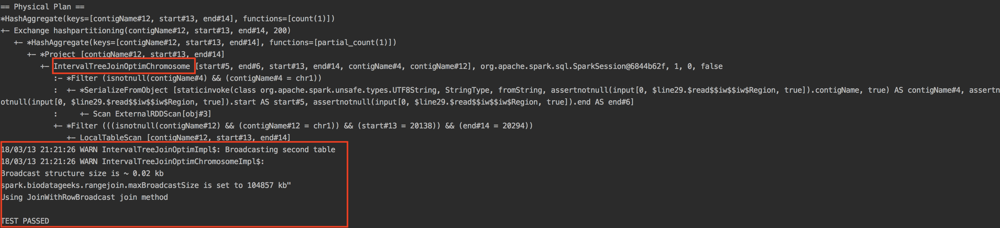

1 Quickstart¶
SeQuiLa is perfect for quick, ad-hoc analysis. Get ready for quickstart with SeQuiLa.
First we will verify installation of SeQuiLa.
1.1 Test run at local machine¶
Sequila is distributed as Docker image. It is available at DockerHub.
The quickest way to test sequila is to run test example on sample data which are already packaged in docker container.
Note
Prerequisities: You should have docker daemon installed and running. https://docs.docker.com/install/
In your command line pull docker image from Docker Hub and invoke smoketests
docker pull biodatageeks/bdg-sequila
docker run -e USERID=$UID -e GROUPID=$(id -g) \
biodatageeks/bdg-sequila \
bdg-shell -i /tmp/smoketest.scala
This will open bdg-shell (wrapper for spark-shell) and load smoketest.scala code for execution. Since all test data are already packaged and accessible within the container you may just wait for results. Which won’t take too long. (Estimated time ~ 1 minute)
At the end you should see the following output:
From the screenshot above you can see that our optimized IntervalTree-based join strategy was used. Some additional debug information were logged to the console.
The final result should be as follows:
TEST PASSED
Congratulations! Your installation is working on sample data.
Note
If you are wondering what this part -e USERID=$UID -e GROUPID=$(id -g) is for: It allows the docker container’s inside-user to write in mounted volumes with host’s user id and group id.
1.2 Launch bdg-shell¶
Here we will launch bdg-shell which is actually spark-shell wrapped by biodatageeks with some additional configuration. So if you are familiar with Scala you will be able to use SeQuiLa right away.
docker run -e USERID=$UID -e GROUPID=$(id -g) \
-it --rm \
biodatageeks/bdg-sequila \
bdg-shell
And voila you should see bdg-shell collecting its depenedencies and starting off. Now you are ready to load your sample data and do some interval queries playing on your own.
1.3 Launch spark-shell¶
If for any reason you do not want to use bdg-shell and prefer pure spark-shell you can of course do that. But to use SeQuiLa’s efficient interval queries you have to configure it appropriately.
docker run -e USERID=$UID -e GROUPID=$(id -g) \
-it --rm \
biodatageeks/bdg-sequila \
spark-shell --packages org.biodatageeks:bdg-sequila_2.11:${BGD_VERSION} \
--conf spark.sql.warehouse.dir=/home/bdgeek/spark-warehouse \
--repositories https://zsibio.ii.pw.edu.pl/nexus/repository/maven-releases/,https://zsibio.ii.pw.edu.pl/nexus/repository/maven-snapshots/
And inside the shell:
import org.biodatageeks.utils.{SequilaRegister, UDFRegister}
/*set params*/
spark.sqlContext.setConf("spark.biodatageeks.rangejoin.useJoinOrder","false")
spark.sqlContext.setConf("spark.biodatageeks.rangejoin.maxBroadcastSize", (128*1024*1024).toString)
spark.sqlContext.setConf("spark.biodatageeks.rangejoin.minOverlap","1")
spark.sqlContext.setConf("spark.biodatageeks.rangejoin.maxGap","0")
/*register UDFs*/
UDFRegister.register(spark)
/*inject bdg-granges strategy*/
SequilaRegister.register(spark)
It seems like there is a lot of configuration required - therefore we recommend using bdg-shell instead.
Note
There are many other ways of how you can use SeQuiLa. Please refer to 3 Usage